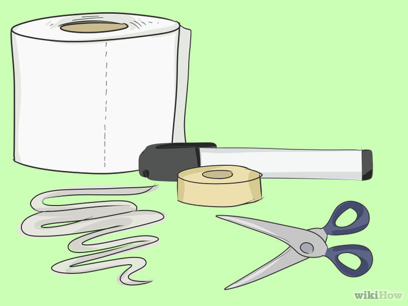
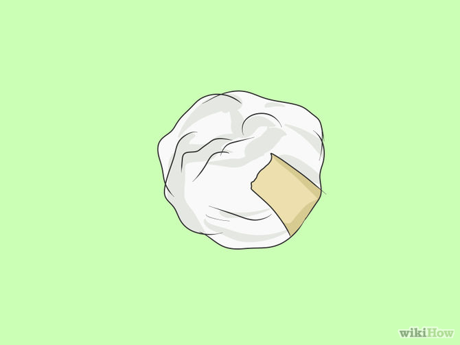
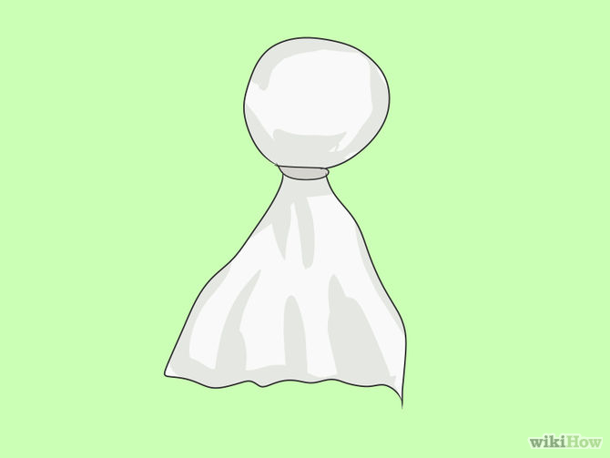
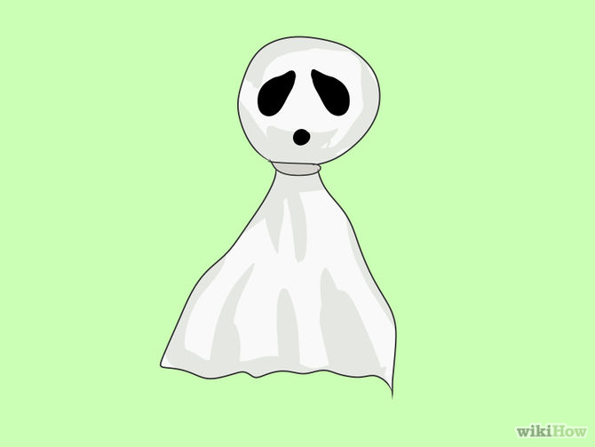
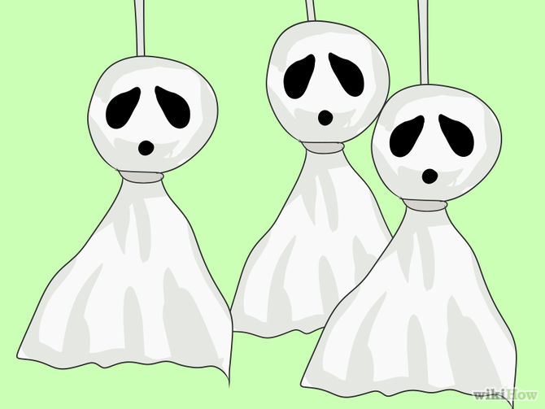

How to Make a Mini Ghost

- Be sure that you have what you need to make them.
- Tissue
- Ribbon/String
- Black Marker
- Tape
- Scissors

- Take a tissue and roll it into a ball. You will use this as a head for the ghost. If you would like to enlarge the head, add another tissue to it. If you would like to tape it to secure it, then please do so.

- Now that you have your head, take another tissue or two and put them on top of the head. Once you have it to your liking, take the ribbon and cut a piece of it. Then, tie the ribbon around it making the head stay inside without falling out. If you would like to, tie the ribbon in a bow as a bow tie.

- Once you complete step 3, take your black marker and draw two eyes. A mouth is optional, but if you would like to make one, just draw a small circle below the eyes so it looks like it might be saying "Boo!"

- If you want to hang it, take your ribbon or string and tape it to the ghost's head on the top and tie or tape the ribbon to wherever you want it to hang from, and you're done.